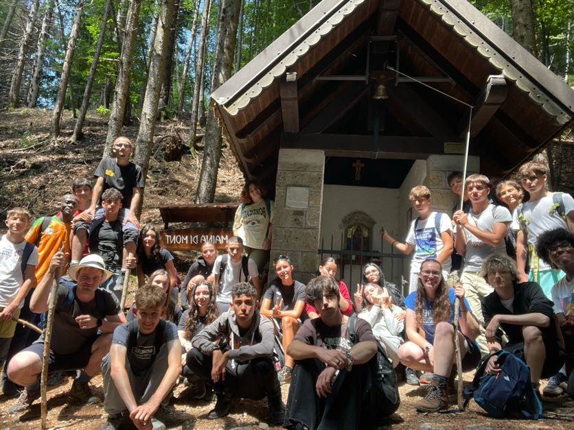

Accoglienza
Ogni ragazzo è il benvenuto. Uno spazio aperto a tutti, senza distinzioni.
L'associazione
NOI Monfalcone APS – Oratorio Diffuso: persone che si impegnano per altre persone.

NOI Monfalcone APS è il circolo che anima l'Oratorio Diffuso: non un solo edificio, ma una rete di luoghi e di persone che negli anni ha unito la Marcelliana, San Canzian d'Isonzo, il Villaggio del Pescatore, l'oratorio San Michele, via Romana e San Nicolò nel lavoro con bambini, ragazzi e giovani.
Il nostro stile è quello dell'oratorio salesiano: allegria, impegno e fare del bene agli altri. Il cuore delle attività è la Casa della Gioventù della Marcelliana, dove i ragazzi di Monfalcone si ritrovano per giocare, crescere e fare comunità. Facciamo parte della rete nazionale NOI Associazione.
Alla Casa della Gioventù c'è uno dei due spazi di Monfalcone della rete Comfort Zone – Spazi Aggregativi: attività pomeridiane gratuite per ragazzi e ragazze dagli 11 anni, aperte tutto l'anno e gestite da NOI Monfalcone (è richiesto il tesseramento al circolo NOI). Qui si fanno i Pomeriggi FuoriClasse, i laboratori (informatica, scacchi, cucina) e le feste.
Comfort Zone è un progetto di quattro anni ideato da IoDeposito ETS con Thiel, NOI Monfalcone, Comuni e scuole, selezionato da Con i Bambini nell'ambito del Fondo per il contrasto della povertà educativa minorile. La rete conta spazi a Monfalcone, Mariano del Friuli, Fogliano Redipuglia, Romans d'Isonzo, Sagrado e Gradisca d'Isonzo.
Scopri Comfort Zone2013
la prima Estate Ragazzi alla Marcelliana
2016
il primo camposcuola a Ravascletto
100+
bambini e ragazzi ogni estate
40
animatori volontari
La nostra storia
Dalla prima Estate Ragazzi ai gruppi di oggi: più di dieci anni di oratorio a Monfalcone.
Le radici
Nel 1927 i frati francescani arrivano alla Marcelliana. Nel dopoguerra la chiesa diventa parrocchia e accanto al santuario nascono strutture ricreative e sportive per i giovani: è la Casa della Gioventù, che ancora oggi ospita le nostre attività.
2013–2014
L'associazione Banda Larga, La Viarte onlus e le parrocchie della Marcelliana e di San Canzian d'Isonzo organizzano l'Estate Ragazzi, un centro estivo per bambini e ragazzi dagli 8 ai 13 anni. Nel 2014 la Marcelliana viene ristrutturata e per i giovani animatori inizia un anno di formazione, con tanto di corso di chitarra.
2015
Gli animatori si formano nei gruppi Mini e Maxi e nelle «Domeniche LIVE», fino a 200 giovani insieme. In tre corriere si va alla Festa dei Ragazzi di Jesolo con 150 ragazzi, mentre al Campo XL 90 adolescenti scelgono di diventare animatori. In autunno l'oratorio diventa davvero «diffuso»: lunedì alla Marcelliana, martedì giochi in inglese con il Collegio del Mondo Unito dell'Adriatico, mercoledì al Villaggio del Pescatore, sabato a San Canzian e al San Michele, domenica a San Nicolò.
2016
A gennaio tutti gli oratori festeggiano don Bosco sulla neve di Tarvisio e arriva la visita dell'arcivescovo Carlo. In estate un gruppo partecipa alla GMG di Cracovia e l'Estate Ragazzi dura sei settimane, tre a Monfalcone e tre a San Canzian. Dal 14 al 21 agosto si svolge a Ravascletto il primo camposcuola Mini e Maxi, con 60 giovani. Al fianco degli animatori ci sono Denis e suor Anna; in autunno, insieme a suor Francesca, le due Figlie di Maria Ausiliatrice di Udine affiancano i gruppi ogni fine settimana. Il 2 ottobre partono le Domeniche Giovani per i ragazzi delle superiori.
2017–2019
Nascono le tradizioni che durano ancora oggi: la gita sulla neve a Tarvisio, le feste di Carnevale per bambini e per ragazzi delle medie, la Festa dei Ragazzi a Jesolo con i salesiani del Triveneto, le domeniche di formazione animatori «Fandeisandei». Ogni estate ci sono l'Estate Ragazzi «One of Us», i campi Mini, Maxi e Animatori a Ravascletto, i laboratori Pixel Summer e la benedizione dei bambini dell'8 settembre. Durante l'anno il doposcuola Friendstime e i «Pomeriggi ad alta intensità» accolgono i ragazzi delle medie. Nel 2019 viene assegnata per la prima volta la Chiave d'oro al ragazzo più meritevole dell'Estate Ragazzi.
2020
La pandemia ferma il Carnevale, ma non l'oratorio: gli animatori restano in contatto con i ragazzi a distanza e dal 6 al 31 luglio organizzano quattro settimane di Estate Ragazzi in piccoli gruppi, «CoviNd2020 – Come Vogliamo il Nostro Domani». L'8 settembre la benedizione dei bambini si fa lo stesso.
2021–2022
Tornano i campiscuola. Nel 2021 nove animatori partono per Palermo per il campo sulle orme di don Pino Puglisi, e i ragazzi del doposcuola collaborano con Voi come Noi a un laboratorio di ceramica per la Neuropsichiatria infantile di Monfalcone. Iniziano i primi incontri del ClanDestino, il gruppo degli animatori delle superiori, che si affianca al FightClub, il gruppo storico dei più grandi. Nel 2022 l'Oratorio Diffuso va a Roma a incontrare papa Francesco, e il campo animatori sale sullo Zoncolan sulle orme dei Nativi Americani.
2023
Con il Campo Animatori «On the Road» e il Campo Medie «The Greatest Show» a Ravascletto, due settimane di Estate Ragazzi e una di pre-scuola, l'Oratorio Diffuso accoglie più di cento bambini e ragazzi grazie a 40 animatori. Accompagnano il cammino fra Roberto, fra Tiziano e don Flavio.
2024
Oltre a campi ed Estate Ragazzi arriva il Summer Green Volley, un camp di pallavolo gratuito per ragazzi dagli 11 ai 17 anni, realizzato con Comfort Zone e il Circolo San Giuseppe. Il ClanDestino festeggia i nonni della casa di riposo e partecipa alla colletta alimentare. A novembre animatori e ragazzi del catechismo animano la festa della Madonna della Salute.
2025
Con lo Spazio Aggregativo Marcelliana, nato dal progetto Comfort Zone, partono i Pomeriggi da NOI (mercoledì, giovedì e venerdì), i Sabati con NOI per gli adolescenti e il laboratorio di informatica e intelligenza artificiale. Per il Giubileo dei Giovani il ClanDestino cammina a piedi verso Aquileia insieme all'arcidiocesi di Gorizia, per poi proseguire verso Roma. All'Estate Ragazzi, sul tema di Oceania, partecipano 80 ragazzi e 30 animatori, e 20 nuovi animatori entrano nel ClanDestino. A settembre salutiamo fra Roberto Benvenuto, dopo sei anni accanto ai nostri gruppi.
2026
Carnevale per bambini e ragazzi, laboratori di scacchi e cucina, i camposcuola Animatori e Medie a Ravascletto, l'Estate Ragazzi di agosto e il pre-scuola. Oggi il catechismo e i gruppi ControVento, ClanDestino e FightClub accompagnano ragazzi e giovani dalle elementari fino all'età adulta, senza lasciare indietro nessuno.
Ogni ragazzo è il benvenuto. Uno spazio aperto a tutti, senza distinzioni.
Accompagniamo i giovani nella scoperta dei propri talenti e della propria strada.
Giochiamo, impariamo e festeggiamo insieme, perché si cresce meglio in compagnia.
Vuoi conoscerci di persona?